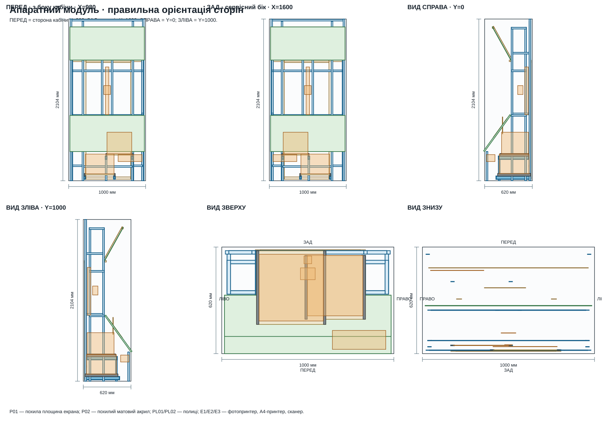
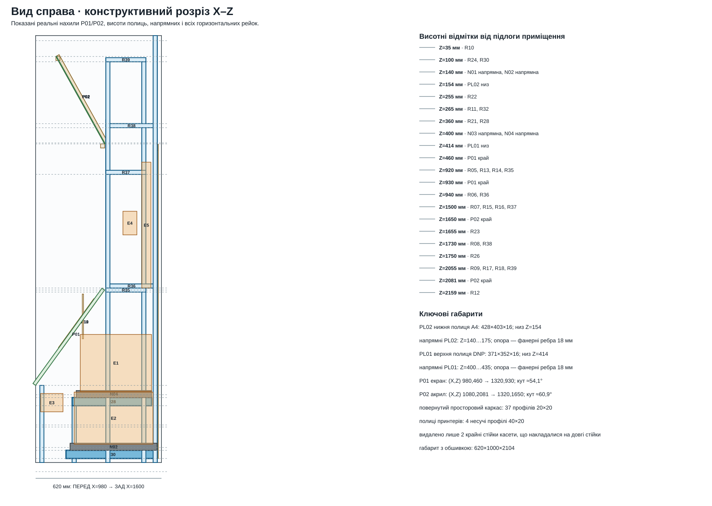
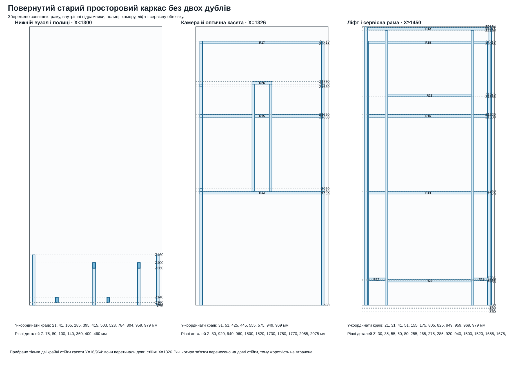
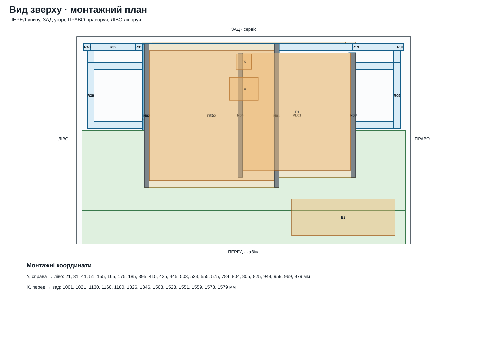
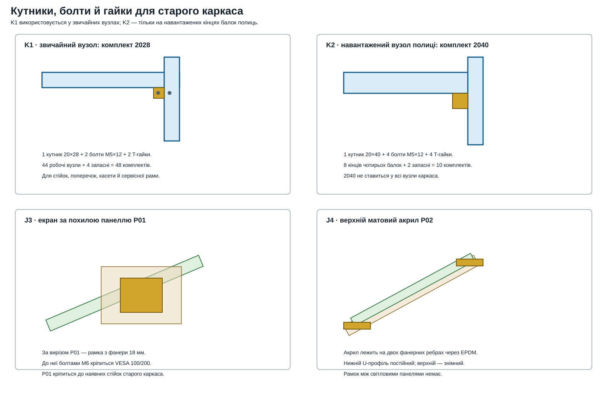
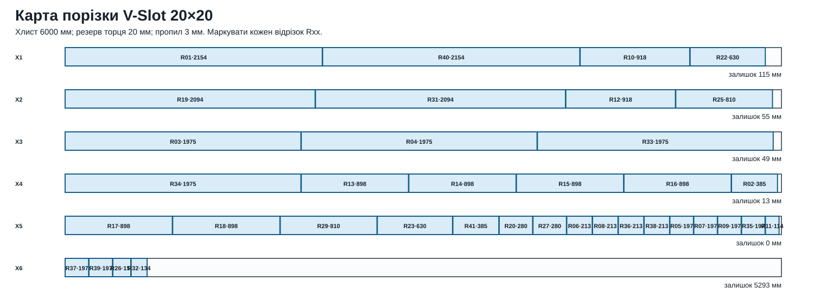
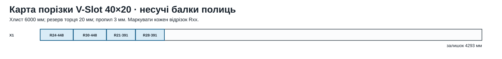

Орієнтація: перед — з боку кабіни X=980; зад — сервісний бік X=1600; справа — Y=0; зліва — Y=1000.
01 · усі сторони02 · правий розріз і висоти03 · старий каркас без дублів04 · план зверху05 · вузли06 · порізка 20×2007 · порізка 40×20





| Марка | Назва | Профіль | Вісь | L | X/Y/Z | Габарит | З’єднання |
|---|---|---|---|---|---|---|---|
| R01 | Кутова стійка, труба 20×20×2 | V-Slot 20×20 AD31 T5 | Z | 2154 | 1559 / 21 / 30 | 20 × 20 × 2154 | K1 · комплект 2028 у точках стику з поперечками |
| R02 | Спільна стійка нижньої шафи | V-Slot 20×20 AD31 T5 | Z | 385 | 1001 / 21 / 75 | 20 × 20 × 385 | K1 · комплект 2028 у точках стику з поперечками |
| R03 | Стійка внутрішнього каркаса модуля 20×20×2 | V-Slot 20×20 AD31 T5 | Z | 1975 | 1326 / 31 / 80 | 20 × 20 × 1975 | K1 · комплект 2028 у точках стику з поперечками |
| R04 | Стійка ліфта/сервісу 20×20×2 | V-Slot 20×20 AD31 T5 | Z | 1975 | 1503 / 31 / 80 | 20 × 20 × 1975 | K1 · комплект 2028 у точках стику з поперечками |
| R05 | Бічна балка внутрішнього каркаса модуля | V-Slot 20×20 AD31 T5 | X | 197 | 1326 / 31 / 920 | 197 × 20 × 20 | K1 · комплект 2028 на кожному кінці за картою складання |
| R06 | Зв’язок бічної стійки внутрішнього каркаса із задньою рамою | V-Slot 20×20 AD31 T5 | X | 213 | 1346 / 31 / 940 | 213 × 20 × 20 | Перенесено з видаленої дубльованої стійки на довгу стійку X=1326 |
| R07 | Бічна балка внутрішнього каркаса модуля | V-Slot 20×20 AD31 T5 | X | 197 | 1326 / 31 / 1500 | 197 × 20 × 20 | K1 · комплект 2028 на кожному кінці за картою складання |
| R08 | Зв’язок бічної стійки внутрішнього каркаса із задньою рамою | V-Slot 20×20 AD31 T5 | X | 213 | 1346 / 31 / 1730 | 213 × 20 × 20 | Перенесено з видаленої дубльованої стійки на довгу стійку X=1326 |
| R09 | Бічна балка внутрішнього каркаса модуля | V-Slot 20×20 AD31 T5 | X | 197 | 1326 / 31 / 2055 | 197 × 20 × 20 | K1 · комплект 2028 на кожному кінці за картою складання |
| R10 | Балка вздовж глибини | V-Slot 20×20 AD31 T5 | Y | 918 | 1559 / 41 / 35 | 20 × 918 × 20 | K1 · комплект 2028 на кожному кінці за картою складання |
| R11 | Права опора полиць, до обв’язки люка | V-Slot 20×20 AD31 T5 | Y | 114 | 1559 / 41 / 265 | 20 × 114 × 20 | K1 · комплект 2028 на кожному кінці за картою складання |
| R12 | Балка вздовж глибини | V-Slot 20×20 AD31 T5 | Y | 918 | 1559 / 41 / 2159 | 20 × 918 × 20 | K1 · комплект 2028 на кожному кінці за картою складання |
| R13 | Поперечка колонки камери | V-Slot 20×20 AD31 T5 | Y | 898 | 1326 / 51 / 920 | 20 × 898 × 20 | K1 · комплект 2028 на кожному кінці за картою складання |
| R14 | Поперечка ліфта всередині модуля | V-Slot 20×20 AD31 T5 | Y | 898 | 1503 / 51 / 920 | 20 × 898 × 20 | K1 · комплект 2028 на кожному кінці за картою складання |
| R15 | Поперечка колонки камери | V-Slot 20×20 AD31 T5 | Y | 898 | 1326 / 51 / 1500 | 20 × 898 × 20 | K1 · комплект 2028 на кожному кінці за картою складання |
| R16 | Поперечка ліфта всередині модуля | V-Slot 20×20 AD31 T5 | Y | 898 | 1503 / 51 / 1500 | 20 × 898 × 20 | K1 · комплект 2028 на кожному кінці за картою складання |
| R17 | Поперечка колонки камери | V-Slot 20×20 AD31 T5 | Y | 898 | 1326 / 51 / 2055 | 20 × 898 × 20 | K1 · комплект 2028 на кожному кінці за картою складання |
| R18 | Поперечка ліфта всередині модуля | V-Slot 20×20 AD31 T5 | Y | 898 | 1503 / 51 / 2055 | 20 × 898 × 20 | K1 · комплект 2028 на кожному кінці за картою складання |
| R19 | Вертикальна обв’язка сервісного люка | V-Slot 20×20 AD31 T5 | Z | 2094 | 1559 / 155 / 60 | 20 × 20 × 2094 | K1 · комплект 2028 у точках стику з поперечками |
| R20 | Стійка полиці фото DS-RX1HS 20×20×2 | V-Slot 20×20 AD31 T5 | Z | 280 | 1160 / 165 / 80 | 20 × 20 × 280 | K1 · комплект 2028 у точках стику з поперечками |
| R21 | Несуча балка полиці фото DS-RX1HS V-Slot 40×20 | V-Slot 40×20 AD31 T5 | X | 391 | 1160 / 165 / 360 | 391 × 20 × 40 | K2 · комплект 2040 на кожному навантаженому кінці |
| R22 | Перемичка сервісного люка | V-Slot 20×20 AD31 T5 | Y | 630 | 1559 / 175 / 255 | 20 × 630 × 20 | K1 · комплект 2028 на кожному кінці за картою складання |
| R23 | Перемичка сервісного люка | V-Slot 20×20 AD31 T5 | Y | 630 | 1559 / 175 / 1655 | 20 × 630 × 20 | K1 · комплект 2028 на кожному кінці за картою складання |
| R24 | Несуча балка полиці A4 HL-L5210DN V-Slot 40×20 | V-Slot 40×20 AD31 T5 | X | 448 | 1130 / 395 / 100 | 448 × 20 × 40 | K2 · комплект 2040 на кожному навантаженому кінці |
| R25 | Спільна стійка касети, труба 20×20×2 | V-Slot 20×20 AD31 T5 | Z | 810 | 1326 / 425 / 940 | 20 × 20 × 810 | K1 · комплект 2028 у точках стику з поперечками |
| R26 | Верхня перемичка пари рейок оптичної касети V-Slot 20×20 | V-Slot 20×20 AD31 T5 | Y | 150 | 1326 / 425 / 1750 | 20 × 150 × 20 | K1 · комплект 2028 на кожному кінці за картою складання |
| R27 | Стійка полиці фото DS-RX1HS 20×20×2 | V-Slot 20×20 AD31 T5 | Z | 280 | 1160 / 503 / 80 | 20 × 20 × 280 | K1 · комплект 2028 у точках стику з поперечками |
| R28 | Несуча балка полиці фото DS-RX1HS V-Slot 40×20 | V-Slot 40×20 AD31 T5 | X | 391 | 1160 / 503 / 360 | 391 × 20 × 40 | K2 · комплект 2040 на кожному навантаженому кінці |
| R29 | Спільна стійка касети, труба 20×20×2 | V-Slot 20×20 AD31 T5 | Z | 810 | 1326 / 555 / 940 | 20 × 20 × 810 | K1 · комплект 2028 у точках стику з поперечками |
| R30 | Несуча балка полиці A4 HL-L5210DN V-Slot 40×20 | V-Slot 40×20 AD31 T5 | X | 448 | 1130 / 784 / 100 | 448 × 20 × 40 | K2 · комплект 2040 на кожному навантаженому кінці |
| R31 | Вертикальна обв’язка сервісного люка | V-Slot 20×20 AD31 T5 | Z | 2094 | 1559 / 805 / 60 | 20 × 20 × 2094 | K1 · комплект 2028 у точках стику з поперечками |
| R32 | Права опора полиць, до обв’язки люка | V-Slot 20×20 AD31 T5 | Y | 134 | 1559 / 825 / 265 | 20 × 134 × 20 | K1 · комплект 2028 на кожному кінці за картою складання |
| R33 | Стійка внутрішнього каркаса модуля 20×20×2 | V-Slot 20×20 AD31 T5 | Z | 1975 | 1326 / 949 / 80 | 20 × 20 × 1975 | K1 · комплект 2028 у точках стику з поперечками |
| R34 | Стійка ліфта/сервісу 20×20×2 | V-Slot 20×20 AD31 T5 | Z | 1975 | 1503 / 949 / 80 | 20 × 20 × 1975 | K1 · комплект 2028 у точках стику з поперечками |
| R35 | Бічна балка внутрішнього каркаса модуля | V-Slot 20×20 AD31 T5 | X | 197 | 1326 / 949 / 920 | 197 × 20 × 20 | K1 · комплект 2028 на кожному кінці за картою складання |
| R36 | Зв’язок бічної стійки внутрішнього каркаса із задньою рамою | V-Slot 20×20 AD31 T5 | X | 213 | 1346 / 949 / 940 | 213 × 20 × 20 | Перенесено з видаленої дубльованої стійки на довгу стійку X=1326 |
| R37 | Бічна балка внутрішнього каркаса модуля | V-Slot 20×20 AD31 T5 | X | 197 | 1326 / 949 / 1500 | 197 × 20 × 20 | K1 · комплект 2028 на кожному кінці за картою складання |
| R38 | Зв’язок бічної стійки внутрішнього каркаса із задньою рамою | V-Slot 20×20 AD31 T5 | X | 213 | 1346 / 949 / 1730 | 213 × 20 × 20 | Перенесено з видаленої дубльованої стійки на довгу стійку X=1326 |
| R39 | Бічна балка внутрішнього каркаса модуля | V-Slot 20×20 AD31 T5 | X | 197 | 1326 / 949 / 2055 | 197 × 20 × 20 | K1 · комплект 2028 на кожному кінці за картою складання |
| R40 | Кутова стійка, труба 20×20×2 | V-Slot 20×20 AD31 T5 | Z | 2154 | 1559 / 959 / 30 | 20 × 20 × 2154 | K1 · комплект 2028 у точках стику з поперечками |
| R41 | Спільна стійка нижньої шафи | V-Slot 20×20 AD31 T5 | Z | 385 | 1001 / 959 / 75 | 20 × 20 × 385 | K1 · комплект 2028 у точках стику з поперечками |
| Марка | Полиця | Габарит | X/Y/Z | Висота |
|---|---|---|---|---|
| N01 | Прихована напрямна полиці A4 HL-L5210DN | 428 × 14 × 35 | 1150 / 395 / 140 | Z=140…175 |
| N02 | Прихована напрямна полиці A4 HL-L5210DN | 428 × 14 × 35 | 1150 / 784 / 140 | Z=140…175 |
| N03 | Прихована напрямна полиці фото DS-RX1HS | 371 × 14 × 35 | 1180 / 165 / 400 | Z=400…435 |
| N04 | Прихована напрямна полиці фото DS-RX1HS | 371 × 14 × 35 | 1180 / 503 / 400 | Z=400…435 |
Повернуто стару схему: зовнішню раму, сервісну обв’язку, внутрішні стійки, три рівні поперечок, оптичну касету та профільні полиці. Видалено лише дві крайні стійки касети, які фізично заходили у довгі стійки X=1326. Кутники й болти тепер включені: 2028 для звичайних вузлів, 2040 тільки для восьми навантажених кінців полиць, окремі T-болти для обшивки, напрямних, VESA та ліфта.
| Код | Товар і пряме посилання | Куди використовується | Кількість | Ціна | Сума |
|---|---|---|---|---|---|
| A01 | V-Slot 20×20 без покриття | 37 деталей повернутого старого каркаса після видалення двох дубльованих крайніх стійок касети; чиста довжина 30.262 м | 6 хлист 6 м | 1122.00 | 6732.00 |
| A02 | V-Slot 40×20 без покриття | 4 несучі балки двох висувних полиць принтерів; чиста довжина 1.678 м | 1 хлист 6 м | 1962.00 | 1962.00 |
| K1 | Комплект 2028: кутник 20×28 + 2 шарнірні болти M5×12 + 2 T-гайки | 44 звичайні кутові вузли старого каркаса + 4 запасні; комплект уже містить кутник, болти й гайки | 48 компл. | 68.00 | 3264.00 |
| K2 | Комплект 2040: кутник 20×40 + 4 шарнірні болти M5×12 + 4 T-гайки Посилання на сайті має нерелевантний slug, але відкриває перевірену картку «Комплект 2040». | 8 навантажених кінців чотирьох балок полиць + 2 запасні комплекти | 10 компл. | 147.00 | 1470.00 |
| K3 | T-болт з гайкою M5×12-20 | 40 кріплень обшивки й легких аксесуарів + 8 запасних | 48 шт. | 26.00 | 1248.00 |
| K4 | T-болт з гайкою M5×20-20 | 16 кріплень напрямних, VESA та щита ліфта через товсті деталі + 8 запасних | 24 шт. | 29.00 | 696.00 |
| K5 | T-гайка M5-20 | резерв для дооснащення після складання й заміни втрачених гайок | 20 шт. | 26.00 | 520.00 |
| K6 | Комплект петлі для V-Slot: петля + 4 болти + 4 гайки | три петлі сервісного люка | 3 компл. | 283.00 | 849.00 |
| S01 | Обов’язкове пакування профілю | вимога продавця для відправлення перевізником | 1 послуга | 170.00 | 170.00 |
| Разом за цінами 15.09.2026 | 16911.00 грн | ||||
Ціна консервативна для повних 6-метрових хлистів. За порізаного метражу дивіться чисті довжини нижче; карти порізки враховують пропил 3 мм і резерв торця.
| Код | Позиція | Кількість | Призначення |
|---|---|---|---|
| B01 | Фанера березова вологостійка 18 мм | за картою деталей | рамка екрана, щит ліфта й локальні підсилення |
| B02 | Конфірмат 7×50 + клей D3 | 40 шт. + 1 флакон | фанерні деталі та обв’язки |
| B03 | Напрямні повного висування ≥45 кг | 2 пари | окрема пара для кожного принтера |
| B04 | VESA-пластина 100/200 + M6 | 1 комплект | екран кріпиться до фанерної рамки за P01 |
| B05 | U-профіль 20 мм + EPDM | 2×928 мм + 4 м | нижній і знімний верхній затиск P02 |
| B06 | ЛДСП 16 мм, крайка, замок люка | за картою панелей | зовнішня обшивка та сервісний люк |


{kind=link}
{kind=link}
{kind=link}
{kind=link}
{kind=link}
{kind=link}
{kind=link}